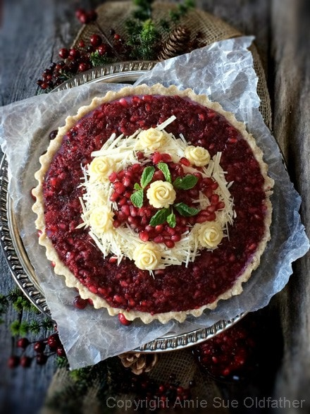
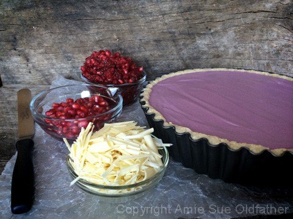
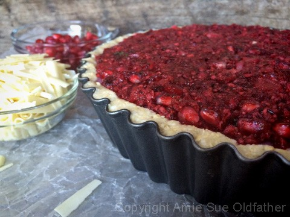
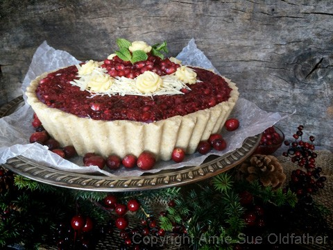
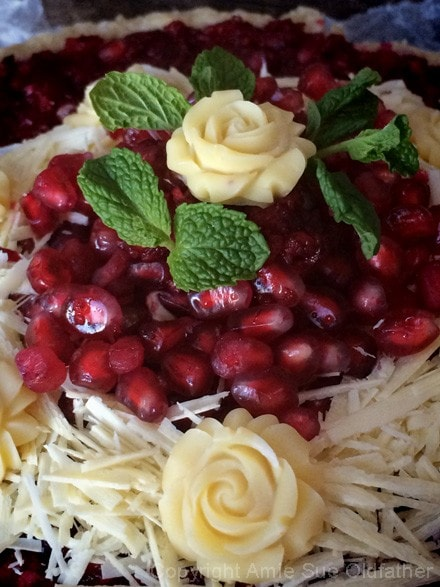
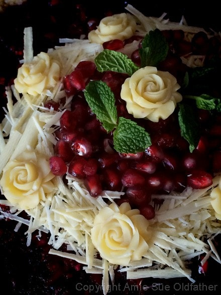
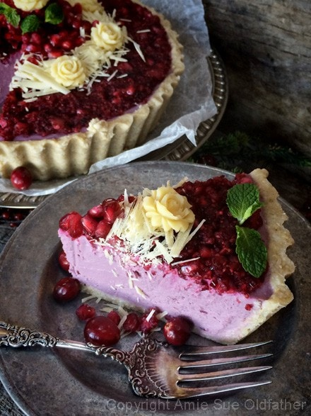
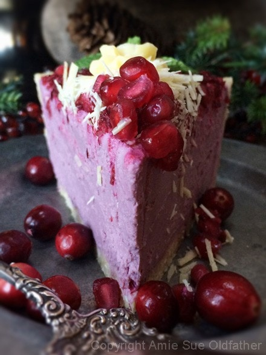

Pomegranate and Cranberry Relish Cheesecake

Pomegranates always make me smile… and it is always my challenge to make my desserts as succulent and red as those little pearls of juiciness. But… it never happens. I always, no matter what, end up with pink ice creams, pink pies, pink whatever… Shoot! I am declaring as of today that pink is the new red! There, the problem solved. :)
As I was juicing the pomegranate seeds, I called Bob into the kitchen to witness the creamy pink juice flowing from the juicer. Pepto Pink! But, like every other attempt, I tried to make my cake more on the red side by adding some beet juice. Well… it’s not pink… but now purple! lol Oy-vey.
I am confident in saying that if I were to add enough beet juice, I could possibly end up with my never-ending-love-affair with red cheesecakes but I always worry about tainting the flavor to the beet notes.
I do enjoy beets, but this isn’t where I want to enjoy them. Plus, my Bob doesn’t like beets at all, and if he can detect beets in it, he won’t eat it. I can’t have that. So as of today, I am denouncing that pink is the new red and stand firm on the fact that purple is NOW the new red. I am a girl, I have the right to change my mind. At least until my next attempt. hehe
I know you won’t mind… but this post contains a bounty of photographs. I think I fell in love with my cheesecake. If you are new to opening pomegranates, click here for a quick and easy tutorial. There are many methods on how to do this, so use what feels comfortable to you.
Also, I tried a new raw cacao butter by Artisana. I am not an affiliate of them nor did they ask me to share about their product. When I find something that I really enjoy, I like to share. I had one of their small bars in my pantry and it was perfect for making the shavings for the top decoration. As far as quality goes, I loved it. I will be using this brand more.
Yields
9″ deep fluted (3.9″ tall) quiche pan
Crust:
Filling:
- 3 cups cashews, soaked 2 + hours
- 2 cups Pomegranate juice
- 3/4 cup maple syrup
- 2 Tbsp beet juice
- 1 tsp liquid vanilla
- 3 Tbsp fresh lemon juice
- 1/4 tsp Himalayan pink salt
- 3 Tbsp sunflower lecithin powder or liquid
- 1/4 cup cold-pressed coconut oil, melted
- 1.5 oz (1/4 cup melted) raw cacao butter
Topping:
Preparation:
Crust:
- Place the cashews in a food processor, fitted with an “S” blade. Process until it reaches a small crumble.
- Add the oats, coconut, and salt. Process until everything is broken down into a small crumble.
- Add the cacao butter, water, and maple syrup. Process until the batter sticks together. The batter will seem a bit wet, that is all right.
- Place the batter in the crust pan and start pressing the dough into the sides of the pan, taking it all the way up to the top. Wetting your fingers will help so the batter doesn’t stick to your fingers. Once the sides are done, firmly and evenly press the batter into the base of the pan. Set aside while you make the filling.
Filling:
- After soaking the cashews, drain, rinse, and discard the soak water.
- In a high-powered blender, combine the cashews, pomegranate juice, maple syrup, beet juice, vanilla, lemon juice, and salt. Blend until nice a creamy. This can take 3-5 minutes., depending on the machine.
- While the blender is running and a vortex is created, drizzle in the coconut oil, melted cacao butter, and then the lecithin. Blend until all is well incorporated.
- Pour the batter into the crust.
- Place your cheesecake in the freezer to set for 1-2 hours or until the middle of the cake is firm to the touch. Or place in the fridge overnight. Make sure the cheesecake is firm before adding decorations to the top. We don’t want them to sink.
- Best to keep cheesecake chilled until serving and put left-overs back into the fridge for up to 5 days.
Topping:
- Make the relish and spread it on top of the cheesecake.
- Pile some loose pomegranate seeds in the center, let them create a small pile.
- Sprinkle the raw cacao butter shavings around the edge.
The Institute of Culinary Ingredients™
- To learn more about maple syrup by clicking (here).
- For tips on working with raw cacao butter, click (here).
- What is Himalayan pink salt and does it really matter? Click (here) to read more about it.
- Is coconut butter the same as coconut oil? Click (here) to find out.
- Are oats gluten-free? Yes, read more about that (here).
- Are oats raw? Yes, they can be found. Click (here) to learn more.
- Do I need to soak and dehydrate oats? Not required but recommended. Click (here) to see why.
- Why I use lecithin… click (here) to read about it.

Ok, let’s get started. To create the look above, you will need to have the raw cranberry
sauce, extra pomegranate seeds, and shaved raw cacao butter ready to go. Oh, and
one purple pie. hehe

Spread 2 cups of relish on top the cake. Place about 1/4 cup of pomegranate seeds
in the very center. Then sprinkle the grated cacao butter around the edge of the seeds.
I added a small dollop of relish in the center of the seeds just to give it some height.


For the roses, I used this mold. I just poured melted raw cacao butter into, slid it
into the freezer for 10 minutes and out popped these gorgeous roses.




© AmieSue.com